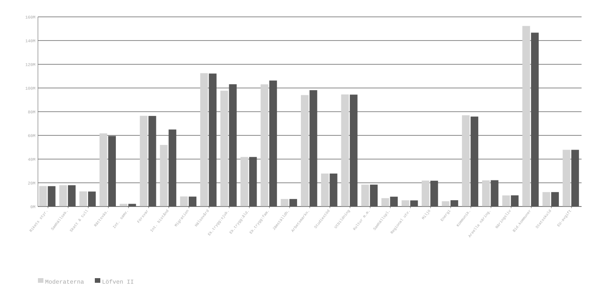

I
Jag brukade arbeta som personlig assistent hos en väldigt politiskt engagerad familj. De lever alla med skyddad identitet, så jag håller mig vag. Jobbintervjun höll brukarens mamma. Jobbintervjun gick kanon. Vi satt och pratade i några timmar, och förvånandsvärt lite av konversationen kretsade kring jobbet i sig. Det var snarare en längre vibe check; kommer han gå oss på nerverna eller kommer det vara kul att ha honom arbetandes i mitt hem?
Efter någon timma av tjötande om ditten och datten slängde mamman ur sig någonting i stil med: "det pratas ganska mycket politik i vår familj", med den implicita frågan är du på vår sida, eller kommer du förstöra husfriden när vi köper dasspapper bärandes Kristerssons ansikte? Jag, som gärna ville konvertera min första jobbintervju till ett jobberbjudande, kläckte ur mig att "det är inga problem, jag är med i SSU, och där cementerades det både att jag skulle få jobbet, och att jag skulle tvingas spela vänster, i a f på arbetstid.
Det var inget problem. Jag älskade jobbet, och familjen jag jobbade hos/med. Jag kan med säkerhet säga att de tyckte mycket om mig med.
Hur som. Under min tid hos den familjen fick jag mycket insyn i deras politiska inställningar. Moderater brydde sig inte om hemlösa. De ville se barn gå hungriga. De ville att sjukvård skulle vara ett privilegium för de rika. Det motsatta gällde för deras respektiva på andra sidan det politiska spektrumet.En kväll satt jag, mamman, och dottern och diskuterade några jobbsökande som vi träffat tidigare samma dag. Mamman berättade att den viktigaste faktorn bakom varför jag fick jobbet, och varför det ≈åtta månader in hade fungerat så väl, var att jag var så ärlig.
Visserligen hade jag varit ärlig i allt utom politik, och kommentaren syftade gissningsvis mer på ärlighet kring mina styrkor och brister än min syn på penningpolitik, men jag skulle ljuga om jag sa att jag var utan dåligt samvete i den stunden.
Jag såg från början fram emot när jag skulle sluta, och få bekänna mitt brott. Hur de skulle förena sina svepande uppfattningar om alla höger om sossarna som empatilösa monster, och uppfattningen av mig som ett icke-monster, skulle vara superintressant. Jag kunde inte förmå mig att göra det. Det hade varit för elakt.
Om vi accepterar tesen att det finns en 1:1 relation mellan godhet och omfördelningspolitik, hur mycket skiljer det egentligen mellan moder Teresa-sidan och den kallhjärtade kapitalistmonstersidan?

Svaret är under 1% budgetstorlek, under 3% för den aggregerade skillnaden mellan poster. Identiska tvillingars längd skiljer mer i snitt än de två blockens budgetpropositioner.
II
Så definierar Wikipedia xenofobi. Läser man vidare i artikeln dyker nazisterna och dess behandling av judar upp som exempel på xenofobi.
I have never regarded the Chinese or the Japanese as being inferior to ourselves. They belong to ancient civilizations, and I admit freely that their past history is superior to our own. They have the right to be proud of their past, just as we have the right to be proud of the civilization to which we belong.
It was in 1932 that my sister Rele provoked my father to reveal our Jewish ancestry for the first time. She played the violin and rejected a violin teacher because he “looked too Jewish.” Our father had responded in a rather convoluted way by saying, “Don’t you know that your grandmother came from the same people as Jesus . . . ?”
Många tyska judar fick lärdom om sin judiska identitet först när nazisterna analyserade deras familjeträd. I dessa fall var inte deras judiska gener närmare kopplat till någon identitet än vilken haplogrupp jag bär på är relaterad till min.
Japanerna å andra sidan såg inte ut som tyskar. De talade inte samma språk som tyskar. De åt inte samma mat som tyskar. De läste inte samma litteratur som tyskar. Bortsett från en delad entusiasm för systematiskt våld är det svårt att hitta likheter mellan de två folken.
Aversion mot konstiga främlingar och dess olikhet verkar inte vara en tillräcklig förklaringsmodell för nazitysklands "xenofobi".
III
Sjunde oktober 2024 var jag och en vän på Norrmalmstorg för minnesmanifestation för de som dödats och kidnappats på Novafestivalen. Det var kul att spana efter Samma vän har senaste året politiskt migrerat, och ockuperar nu den ungefärliga positionen "förintelsen är ett judiskt påhitt, men om det skedde var det bra." Vad snabbt det kan gå. krypskyttar och SÄPO-agenter, men inom en halvtimma hade jag tröttnat och begav mig hemåt.
Jag gick mot T-centralen, och såg att det på Plattan stod en grupp ungdomar, tillhörandes ett kommunistiskt parti, som delade ut anti-israeliska flygblad. Rörd av manifestationens gulliga judiska (och förvånandsvärt många persiska) gubbar och tanter kunde jag inte hålla mig från att gå fram. Jag sa precis vad jag tänkte: på ett intellektuellt plan har jag redan sedan innan problem med er position, men på ett känslomässigt plan finner jag det äckligt att ni valt denna dag och denna plats att sprida er galla.
Sedan stod vi där i Oktoberkylan och diskuterade i många timmar, jag i mössa och ullrock, dem i tunna punkvästar -- sovjetisk lojalitet måste försett dem med övernaturlig köldtålighet.
Föga förvånande kom vi inte överens om särskilt mycket, men trots det var diskussionen väldigt bra; genuina försök från båda håll att förstå varandra, ingen ilska, inga höjda röster, med ett undantag. Jag, utmattad efter många timmars diskussion, bytte spår och frågade en av dem om de och Revolutionära Kommunistiska Partiet var samma organisation. Där bar det av. Man hade kunnat tro att RKP avrättat hela hans familj. RKP var trotskister, och hans organisation var [stalinister/leninister/whatever]. Att många timmar respektfullt diskutera med mig, rasistisk folkmordapologet, var inga problem -- vi kunde ändå lära oss av varandra -- men han drog en fet röd linje vid fel bolsjevistisk gren, det var oförlåtligt.
IV
Vi och dem-dikotomin har kilat fast sig i modernt metapolitiskt tänkande. Detta menar jag är missvisande. Ingruppen och utgruppen måste komplementeras med en tredje klass: en grupp för långt borta för att identifieras som antagonistisk -- en spökgrupp.
Vi och dem dikotomin, tagen till sin naturliga gräns, insinuerar att antagonismen ökar i takt med att skillnaderna ökar. I realitet kan antagonismen plottas som en parabel, där antagonismen är som störst när vi:et skiljer sig tydligt från dem:et, men likheterna fortfarande är stora nog att att ingruppen kan identifiera sig med utgruppen.
V
In Russia, before the Revolution, the doomed classes romanticized the Russian peasant as good, brave, and Christian muzhik. A relativistic bourgeoisie in a confused Europe searched all sorts of exotic cultures for the purpose of making them an object of its aesthetic consumption. The aristocratic society in France before the Revolution of 1789 sentimentalized “man who is by nature good” and the virtue of the masses. (...) nobody scented the revolution; it is incredible to see the security and unsuspiciousness with which these privileged spoke of the goodness, mildness, and innocence of the people when 1793 was already upon them.
Min pappa har ofta pratat om den goda fienden. Jag förstår termen som att "den goda fienden" är en illusion, påhittad eller överdriven, för att rättfärdiga något som annars aldrig skulle accepteras -- en bekvämlig fiende.
Jag vill omdefiniera termen. Den goda fienden är riktig, och han är god endast p g a vetskapen att han är riktig.
När haven stormar och gatorna står i brand, stanna upp en sekund och se vem du krigar mot. Kain dödade inte en främling. Han dödade sin bror.